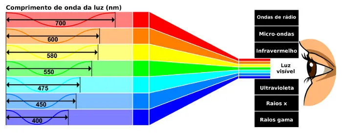

A visão, um dos principais sentidos do corpo humano, é uma das formas
mais potentes de percepção e interpretação do ambiente ao redor já
inventadas pela natureza. Ela é capaz de captar diferentes comprimentos
de luz visível – a fração do
espectro eletromagnético que nossos olhos conseguem
detectar – e, transformando-os em estímulos nervosos, entender as
formas, cores e tamanhos dos mais diversos objetos e seres existentes
nas redondezas.

Para que a nossa visão funcione, é necessário que os nossos olhos captem
uma quantidade mínima de luz. Existem dois tipos principais de
fotorreceptores, o centro da retina, chamado de fóvearetiniana, é
formado por cerca de 7 milhões de fibrilas nervosas, denominadas cones,
responsáveis pela visão em cores: visão tricomática. As células que
captam os estímulos luminosos fornecidos pelo ambiente: os bastonetes e
os cones. Os bastonetes são capazes de funcionar com uma quantidade
muito pequena de luz; no entanto, não conseguem captar cores. É por isso
que, à meia-luz, não conseguimos distinguir corretamente a coloração dos
objetos. Os cones, por outro lado, são neurônios responsáveis pela
distinção das diversas tonalidades de cores que somos capazes de
enxergar.